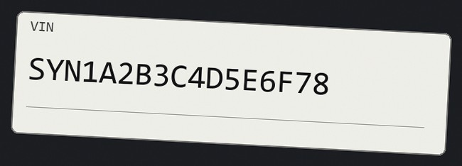

R&D Data Analyst·Machine Learning·Centurion, South Africa
I build the dashboards a company runs on, and the machine learning that quietly does
the reading: production VLM and NLP systems, quant backends that never
sleep, and a city simulated from survey data.
Presented here as they deserve to be: as scripture.
Where the devotion was actually spent. Ledgers, dashboards and models that
other people depend on to be correct.
R&D Data Analyst
Vehicle telematics firm · Business Intelligence & Automation, R&D
Selected into the Business Intelligence & Automation team in Research &
Development, where I own the operational reporting that the business steers by,
and the machine learning that removes the manual reading of it.
Reporting, automated
Automated and deployed five business-critical operational reports (Daily Stock, Global Operations, Churn & Retention, Hardware Health and Product Adoption), cutting manual reporting time while holding accuracy.
Designed, built and maintain production Grafana dashboards on Python and SQL for stock, delivery and operational performance monitoring.
Built the Stock Delivery Dashboard from the ground up, giving end-to-end visibility into stock movement and delivery operations.
Delivered the Delivery Product Dashboard, tracking commissions, operational activity and key performance indicators.
Designed and deployed the Mining Division Dashboard, enabling data-driven performance monitoring and business insight.
Machines, in production
Built a Vision-Language Model that extracts VIN numbers from vehicle imagery, handed to the software development team for integration into production.
Built an NLP ticket classification system, handed to the software team for integration.
Built an NLP call analyser that transcribes and audits customer calls, summarises them, and surfaces the whole thing in a Streamlit dashboard so call quality can be reviewed without listening to the call.
Python
SQL
Grafana
VLM
NLP
PostgreSQL
Private Tutor
Tutor Doctor
Tutored students from Grade 1 through Grade 12 in Afrikaans, IT and Mathematics,
which is really an exercise in rebuilding one explanation a dozen different ways
until it takes. The same skill I use explaining a dashboard to the person who has
to act on it.
Student Representative Council
Belgium Campus ITversity
Coordinated campus events and ran club activities, and represented the institution
to prospective students on open days.
Chapter II
The Deck
Six works, dealt as arcana. Turn a card to read what it actually is,
and its inverted meaning: the part that was genuinely hard.
The numeral is the weight of the work, not the order I built it.
0 / 6 read
I
Hermes
The Magician
Autonomous Trading Agent
Turn the card
I · The Magician
Hermes
An autonomous trading agent built on Nous Research's Hermes Agent framework, wired
straight into Polymarket's CLOB on the Polygon blockchain. It runs unattended,
24 hours a day, on an Oracle Cloud Infrastructure VM, signing its own orders.
Python
Hermes Agent
Polymarket CLOB
Polygon
Gnosis Safe
Oracle Cloud
Inverted: key custody was the whole problem. A lone hot
wallet is a liability, so the agent signs through an EOA signer sitting behind a
Gnosis Safe proxy: it can trade, but it can never move the treasury.
III
ReputeIQ
The Empress
Reputation Intelligence Platform
Turn the card
III · The Empress
ReputeIQ
A full-stack reputation platform for local businesses. Google Business Profile OAuth,
review sync on cron, AI reply generation in three tones, email and SMS campaigns with
contact import, multi-tier billing through PayPal, and a weekly digest, for salons
and clinics that have reviews but no idea what they're worth.
Next.js
TypeScript
Supabase
PostgreSQL
Tailwind
GPT-4o-mini
Vercel
Vitest
Inverted: the loop was easy and the point was hard.
Collect → respond → campaign is plumbing. Proving that reputation actually moves
revenue is the unsolved part, and it's the only part a customer pays for.
A self-hosted quantitative analysis backend. It pulls OHLCV price data across crypto,
forex and futures on timeframes from one minute to one week, caches it locally, then
classifies the market's current regime and returns ranked strategy signals behind a
bearer-token API with a server-rendered dashboard.
Python
FastAPI
SQLite
Pandas
Docker
Jinja2
Binance
Yahoo Finance
Inverted: regime classification is easy to make look clever
and hard to make honest. It fuses rolling volatility, ADX, RSI distribution,
volatility clustering and a Hurst exponent proxy. And a confidence score that is
never wrong is a confidence score that isn't measuring anything.
A complete brand and single-page storefront for a South African premium gym-accessories
label (wrist wraps, lifting straps, elbow sleeves) in a market-testing phase.
Delivered as a design system with tone-of-voice rules, a component kit, preview
specimens and an importable Shopify theme.
Shopify Liquid
HTML
CSS
JavaScript
Design Systems
Inverted: writing the rule "no border-radius anywhere" takes
a minute. Holding it across a hundred components, a cart modal, a sticky header and a
mobile nav is the actual design work.
Three models taken from notebook to production. A Vision-Language Model
that reads VIN numbers off vehicle photographs. An NLP classifier that routes support
tickets. An NLP call analyser that summarises conversations so nobody has to listen
to them twice. All three handed to the software development team for integration.
Python
Vision-Language Models
NLP
Classification
Summarisation
Inverted: a model that is 94% accurate in a notebook and a
model that is 94% accurate on a grimy photograph of a windscreen VIN plate are not the
same model. Production is always the second one.
Final-year dissertation. Applied Generative Agent-Based Modelling to the Gauteng
City-Region, grounding agent behaviour in GCRO Quality of Life Survey data through
GraphRAG: a city of agents whose beliefs come from what real residents actually said.
Python
GABM
GraphRAG
Knowledge Graphs
LLM Agents
POPIA
Inverted: simulating a city means simulating people, and
POPIA does not care that it's for research. Consent, aggregation and re-identification
risk shaped the architecture more than any modelling choice did.
Chapter III
The Doctrines
What I actually work in. Every entry here is something I have shipped
with, not something I have read about.
Work & Worship
Languages
PythonDaily driver: ML, pipelines, automation
SQLMulti-region PostgreSQL in production
C#.NET coursework & solutions
TypeScriptNext.js application work
HTML / CSS / JSFront ends, storefronts, dashboards
Law & Order
Machine Learning & Data
Natural Language ProcessingClassification, summarisation
Formation, certification, and the tongues I can argue in.
Ordination
BSc Computer Science
Belgium Campus ITversity 2023 – Present
Computer Science, with the final year given over to the Gauteng
agent-based modelling dissertation.
National Senior Certificate
High School Eduplex 2018 – 2022
Certifications
Kaggle: Python
Kaggle: Pandas
Kaggle: Intermediate Machine Learning
Chapter V
The Trials
Two of the systems I build, put in front of you instead of described
to you. Everything below is output the pipelines actually produced, replayed.
Terms of the trial
Both projects are Python that needs private model weights and customer media, so neither
can run inside a browser tab, and I will not pretend otherwise. What can run here
does, and each trial has a panel at the bottom of it that runs on your file rather
than mine. Hand the first trial a photograph of a plate and it measures it the way the
project measures a crop, number for number, flag for flag. Hand the second a recording and
it decodes it, gates it, applies the project's trim rule and draws the waveform it found.
The validation rules, the scoring functions and the trim thresholds are all ported to
JavaScript, they are live, and you can type at them. Everything else is read back out of
the projects' own code and their own published sample corpora.
So each trial states its own provenance, and I have kept the two kinds of evidence apart.
Where a number was computed, the project computed it. Where a corpus is
fabricated, the trial says so in as many words. A portfolio that blurs those two
together is not worth reading.
The plates are drawn renders, not photographs, and every VIN
carries a SYN prefix so it cannot collide with a real vehicle. The call corpus is invented
end to end. The agents in it are anonymous voice clusters, never names.
Trial I
The Sigil
A vehicle carries its identity stamped on a plate. This one reads that
plate off a photograph: find it, refuse it if it is too poor to trust, read the
characters, choose the right line of text, then validate. Six plates, drawn to be
awkward in six different ways.
Provenance. These reads are not a re-enactment. The project's
own OCR and validation functions were run over these six plates when this page was
built, and the confidences below are the ones it returned. The plates themselves are
synthetic renders. One substitution is marked where it appears: the trained segmentation
model is private, so the plate box comes from thresholding instead. Two more stages of the
real system are not replayed here at all: the deskew, which needs those segmentation
polygons, and a Vision-Language Model cross-check that resolves the plates the
classical chain cannot. In production the whole thing is reconciled into a multi-tab
Excel export before it reaches the software team.
Read the source on GitHub ↗
YOLO11-seg
OpenCV
PaddleOCR
Vision-Language Models
The corpus

T00001 · clean, straight-on
The reading, stage by stage
The repair, live
live
A VIN is seventeen characters of A to Z and 0 to 9, and the letters I, O and Q are
excluded from it entirely. They are excluded because they look like 1 and 0, which
is exactly what OCR returns for them. So a candidate that is otherwise perfectly shaped
but fails on nothing except a banned letter is probably a real VIN that was misread.
These are the notebook's own rules, ported line for line. Change the I to a 1, or retype
the whole thing, and watch what it says.
Bring your own plate
runs on your file
The gate in the reading above was measured, not remembered. Give it a photograph and
it measures yours the same way: a copy rescaled to the project's own 1024px, the
contrast-normalised Brenner focus that decides the blur flag, the exposure, and the Otsu
stroke contrast it reports but does not vote with. Then type what you can read on the
plate, or paste what some other reader returned, and the notebook's own rules run over
that text for real.
Two stages cannot run here, and the panel says so where they would
have been: detection needs trained weights this page does not carry, and
OCR needs a Python runtime it does not have. Everything upstream and downstream of
those two does run. Your file is read in the browser and never leaves it.
The gate, measured on your file
What the plate reads
Trial II
The Confession
A retention call, transcribed and then audited. Which segments can be
trusted, which language was spoken, whose voice it was, and how much of the error rate is
one model artefact wearing a disguise. On the bilingual English and isiZulu calls it was
built for, speaker identification reached 92%, measured against hand-verified
transcripts.
Provenance. The corpus is the project's own published sample:
eight invented calls, written in the exact record schema the pipeline emits, with the
dashboard's thresholds imported from its config so the sample trips the same flags real
output would. Every word and every id in it is fabricated. The error rates are the
corpus's own recorded ones, carried in each record exactly as the pipeline wrote them,
which is why the call with no hand-checked reference carries none and reads as not
scored. The scoring functions behind those numbers are ported to JavaScript further down
this trial, and they run there on text you supply.
Read the source on GitHub ↗
faster-whisper
Silero VAD
ECAPA-TDNN
GlotLID
rapidfuzz
Streamlit
The transcripts that came out of this
were benchmarked against hand-verified reference text and then kept: clean training data
for a custom speech model.
The recordings
Time runs left to right. The agent speaks above the line, the caller below.
Vermilion marks a segment the audit flagged, and a struck bar is one it dropped
outright. On a narrow screen the map keeps its scale and scrolls sideways, because
a timeline squeezed to fit stops being readable. Every segment drawn here is listed
underneath in full.
The ledger
The scores
The planted artefact
The corpus plants a fault on purpose: five of the eight records end with the same four
words. Whisper's classic repetition loop on silence, confident and repetitive at once,
which is precisely what the repetition-risk flag exists to catch. So the detector has
something to find, and this is what it found. Read the confidence next to the
compression ratio: confidence alone would keep every one of these.
The verdict on the corpus
The error rates are pooled across the four calls that carry a
hand-checked reference. The other four have none, so they are not scored, and this page
will not invent a number for them. One of the four scored calls carries the planted
tail: scoring it as it stands costs 13.95% word error, and dropping the tail takes the
same call to 7.75%. Across the corpus that is 9.54% down to 7.95%. That gap
is the whole argument for auditing a transcript rather than trusting it.
Bring your own recording
runs on your file
The audit above ran on invented calls. Hand it a recording and it does the same work on
yours: it decodes the file, converts it to mono at the project's own 16 kHz, measures the
speech and the silence frame by frame, draws the waveform it actually found, and then
applies the project's trim rule to the result, which is that only silences of
two seconds or more are cut, and they are cut down to a 300 ms gap rather
than removed. Those are the project's own constants, and natural pauses survive them.
Two stages cannot run here and the panel says so where they would
have been. Silero VAD is a trained network this page does not carry, so the panel
uses an energy gate instead and calls it that rather than borrowing the name. And
Whisper is a model, not a browser API, so it cannot transcribe your audio. The
scoring, however, is real: give it what a recogniser returned and what the truth was, and
the error rates below are computed by the project's own functions.
The recording, as this page measures it
What the recogniser returned, and what was actually said
Paste a transcript into either box. Leave the reference empty and
the error rates are not scored, which is exactly what the project does with a call
that has no hand-checked reference. Leave both empty and there is nothing to score;
the panel will say so rather than guess.
Both of those come from the recogniser's own token stream and
cannot be recomputed here without it. Leave either blank and the rule skips that
condition, which is what the project does when a record has no value for it.
Chapter VI
The Rite
I am looking to grow further into applied machine learning and data
science. If you are hiring for that, or you just want to argue about dashboards, the
circle is open.